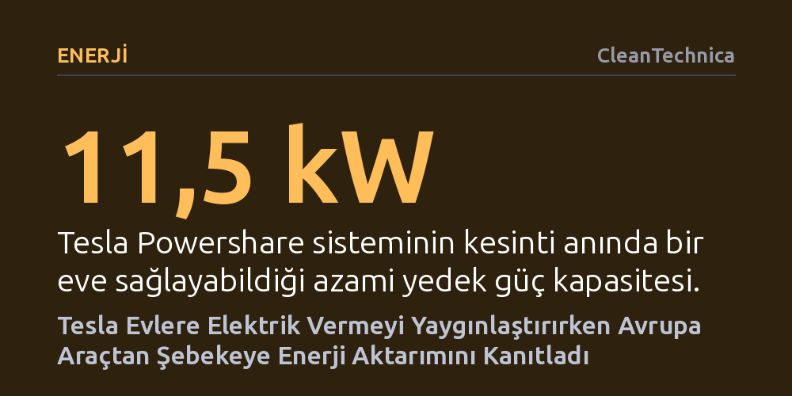

ENERJI · CleanTechnica · 2026-10-12
Tesla, araç bataryalarından evlere elektrik aktarma özelliğini popüler modellerine genişletirken, Avrupa Birliği'nin dört yıllık araştırması çift yönlü şarjın şebekeyi dengeleyip maliyetleri düşürdüğünü kanıtladı.
Elektrikli araçların yalnızca birer ulaşım aracı değil, kesintilerde evleri günlerce besleyen ve şebekeyi dengeleyerek gelir getiren taşınabilir enerji santralleri olduğunu gösteriyor.

Elektrik kesintileri yaşandığında geleneksel çözüm, binlerce dolar harcanarak kurulan gürültülü ve fosil yakıtlı jeneratörlere sığınmaktır. Oysa elektrikli araçlar yaygınlaştıkça otomobiller, garajda bekleyen birer taşıt olmanın ötesine geçerek evlerin elektrik ihtiyacını günlerce karşılayabilecek devasa bataryalara dönüşüyor. Tesla, başlangıçta yalnızca Cybertruck modeline sunduğu "Powershare" ev yedekleme teknolojisini popüler modelleri Model 3 ve Model Y için de devreye alarak bu kabiliyeti kitleselleştiriyor.
Sistem, elektrik kesintisi anında bir konuta azami 11,5 kW güç sağlayabiliyor. Günlük ortalama tüketimi 30 kWh olan standart bir hane hesaba katıldığında, yüzde 90 veya üzerinde şarj edilmiş bir Model 3 ya da Model Y bataryası, evin tüm elektrik ihtiyacını yaklaşık iki gün boyunca sessizce ve kesintisiz karşılayabiliyor. Bu kapasite, şebekenin çöktüğü fırtına ve afet durumlarında elektrikli araç sahiplerine pahalı jeneratör yatırımlarına gerek bırakmayan güvenli bir enerji güvencesi sunuyor.
Araçtan eve çift yönlü enerji aktarımı, pek çok kişinin düşündüğü gibi uzaktan gönderilecek basit bir yazılım güncellemesiyle sunulamıyor. Elektriğin bataryadan eve güvenle akabilmesi, aracın güç elektroniğinde çift yönlü enerji yönetimini destekleyen özel donanım bileşenlerini zorunlu kılıyor. Bu nedenle eski üretim araçların sonradan bir donanım yükseltmesiyle bu özelliği kazanıp kazanamayacağı henüz belirsizliğini koruyor.
Donanım kısıtlamaları araçla da sınırlı kalmıyor; evin elektrik altyapısının da bu çift yönlü akışa uyumlu olması gerekiyor. Cybertruck harici bir ev bataryasına ihtiyaç duymadan özel bir ağ geçidi (Gateway) ve duvar konnektörüyle çalışabilirken, Model 3 ve Model Y sahiplerinin enerjiyi eve aktarabilmek için bir Powerwall 3 ev bataryasına sahip olması şart koşuluyor. Ayrıca konutun elektrik panosunun 225 amperin altında bulunması ve kurulumun yetkili uzmanlarca yapılması gerekiyor.
Elektrikli araç bataryalarının potansiyeli yalnızca acil durum kesintilerinde evi aydınlatmakla sınırlı değil. Şebekeye bağlı milyonlarca aracın elektrik şebekesini dengelemesi, yenilenebilir enerji fazlasını depolaması ve hatta araç sahibine para kazandırması uzun süredir konuşulan bir vizyondu. Avrupa Birliği'nin dört yıl boyunca yürüttüğü kapsamlı EV4EU projesi, bu vizyonun sahada nasıl çalıştığını somut verilerle ortaya koydu.
Portekiz, Slovenya, Yunanistan ve Danimarka'da yürütülen denemelerde araçtan şebekeye enerji aktarımı farklı kullanım alanlarında sınandı. Portekiz'deki konut ve kamu binalarında uygulanan çift yönlü şarj noktaları, hanelerin şarj maliyetlerini ortalama yüzde 14 düşürürken sisteme entegre edilen yenilenebilir enerji miktarını yaklaşık yüzde 22 artırdı. Danimarka'da ise rüzgar ve güneş üretiminin yoğun olduğu otoparklarda akıllı kontrol algoritmaları sayesinde şebekedeki faz dengesizlikleri azaltıldı ve fosil yakıt kullanımı doğrudan aşağı çekildi.
Üreticilerin ve kullanıcıların çift yönlü şarja bugüne dek temkinli yaklaşmasının temelinde batarya yıpranması korkusu yatıyordu. Bataryanın sürekli şarj edilip boşaltılmasının ömrünü hızla tüketeceği varsayılıyordu; nitekim Tesla da geçmişte bu gerekçeyle çift yönlü şarjdan uzak durmuştu. Ancak güncel veriler bu endişenin yersiz olduğunu gösteriyor; modern batarya kimyaları artık içinde bulundukları aracın mekanik ömründen bile daha uzun süre dayanıyor.
EV4EU araştırması, sürücülerin mobilite ihtiyaçlarını gözeten doğru algoritmalarla batarya üzerindeki yıpranma stresinin asgari düzeye indirilebileceğini ortaya koydu. Dahası, binlerce aracın sanal enerji santralleri çatısı altında bir araya getirilmesi, üretilen temiz enerjinin israf olmasını önlerken elektrikli araç sahiplerini yalnızca elektrik tüketen değil, esneklik sağlayarak gelir elde eden aktif enerji paydaşlarına dönüştürüyor.